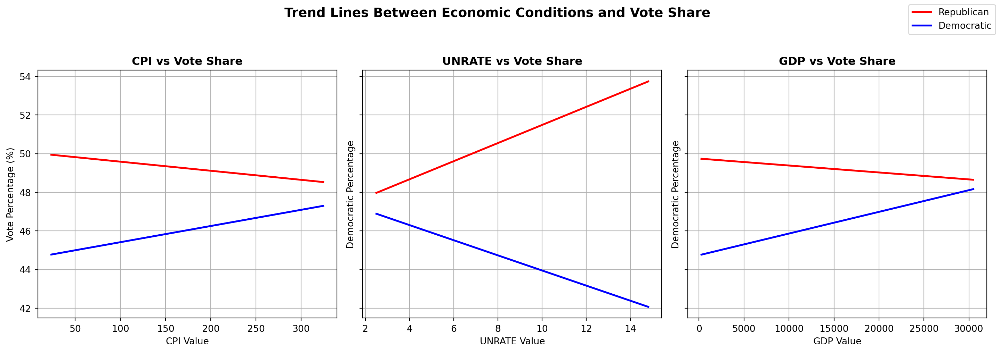
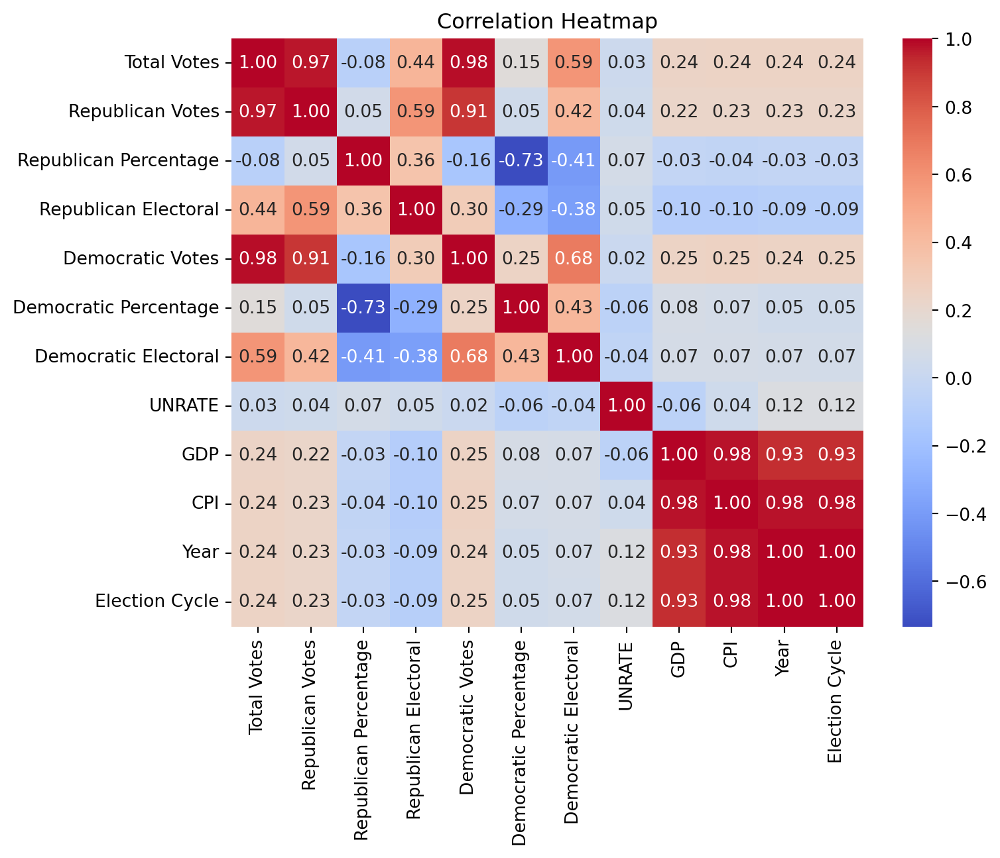

/var/folders/60/p3sjh3zx3793rb8gcc5_7qn00000gn/T/ipykernel_41557/3642518538.py:203: DtypeWarning: Columns (4,7) have mixed types. Specify dtype option on import or set low_memory=False.
df = pd.read_csv('economic_election_data.csv')Demonstration of the Functions:
This function, wrangle_data, allows us to wrangle downloadable csvs about economic data. Here we plug in our unemployment rate dataset and it does all of the wrangling and formatting for us. Here are just the first five rows of what the data will look like afterwards.
Code
UNRATE = wrangle_data(
filepath='UNRATE.csv',
value_col='UNRATE'
)
UNRATE.head()| Month | Year | UNRATE | |
|---|---|---|---|
| 0 | January | 1948 | 3.4 |
| 1 | February | 1948 | 3.8 |
| 2 | March | 1948 | 4.0 |
| 3 | April | 1948 | 3.9 |
| 4 | May | 1948 | 3.5 |
The next function, merge_and_sort_data, combines all of the economic data that we gathered into one data set. Here you can see that all three of the data sets are combined together to make one dataset. There are a few missing values but those get taken care of in another function that we have.
Code
combined_data = merge_and_sort_data(UNRATE, GDP, CPI)
combined_data.head()| Month | Year | UNRATE | GDP | CPI | |
|---|---|---|---|---|---|
| 0 | January | 1948 | 3.4 | 265.742 | 23.68 |
| 1 | February | 1948 | 3.8 | NaN | 23.67 |
| 2 | March | 1948 | 4.0 | NaN | 23.50 |
| 3 | April | 1948 | 3.9 | 272.567 | 23.82 |
| 4 | May | 1948 | 3.5 | NaN | 24.01 |
Our next fuction, get_presidents_html, allows us to scrape the data about presidents of the United States, the years that they were president and the political party that they represented. This allows for easier data combination and cleaning so we will combine that with the last function, add_presidnets_to_data, we combine the data that we have and clean it creating our final president and economic dataset ready to be combined with the election data.
Code
url = 'https://en.wikipedia.org/wiki/List_of_presidents_of_the_United_States'
email = "skirk03@byu.edu"
ua = f"STAT386-class-scraper/1.0 (+{email})"
r = requests.get(url, headers={"User-Agent": ua, "From": email}, timeout=15)
text = get_presidents_html(ua = f"STAT386-class-scraper/1.0 (+{email})", email = "skirk03@byu.edu")
Final_df = add_presidents_to_data(combined_data, text)
Final_df.head(20)/var/folders/60/p3sjh3zx3793rb8gcc5_7qn00000gn/T/ipykernel_41557/3642518538.py:50: FutureWarning: Passing literal html to 'read_html' is deprecated and will be removed in a future version. To read from a literal string, wrap it in a 'StringIO' object.
tables = pd.read_html(html_text)
/var/folders/60/p3sjh3zx3793rb8gcc5_7qn00000gn/T/ipykernel_41557/3642518538.py:68: UserWarning: Could not infer format, so each element will be parsed individually, falling back to `dateutil`. To ensure parsing is consistent and as-expected, please specify a format.
df["Start_Date"] = pd.to_datetime(
/var/folders/60/p3sjh3zx3793rb8gcc5_7qn00000gn/T/ipykernel_41557/3642518538.py:71: UserWarning: Could not infer format, so each element will be parsed individually, falling back to `dateutil`. To ensure parsing is consistent and as-expected, please specify a format.
df["End_Date"] = pd.to_datetime(| Month | Year | UNRATE | GDP | CPI | President | Party | |
|---|---|---|---|---|---|---|---|
| 0 | January | 1948 | 3.4 | 265.742000 | 23.68 | Harry S Truman | Democratic |
| 2 | February | 1948 | 3.8 | 268.017000 | 23.67 | Harry S Truman | Democratic |
| 4 | March | 1948 | 4.0 | 270.292000 | 23.50 | Harry S Truman | Democratic |
| 6 | April | 1948 | 3.9 | 272.567000 | 23.82 | Harry S Truman | Democratic |
| 8 | May | 1948 | 3.5 | 274.776667 | 24.01 | Harry S Truman | Democratic |
| 10 | June | 1948 | 3.6 | 276.986333 | 24.15 | Harry S Truman | Democratic |
| 12 | July | 1948 | 3.6 | 279.196000 | 24.40 | Harry S Truman | Democratic |
| 14 | August | 1948 | 3.9 | 279.586000 | 24.43 | Harry S Truman | Democratic |
| 16 | September | 1948 | 3.8 | 279.976000 | 24.36 | Harry S Truman | Democratic |
| 18 | October | 1948 | 3.7 | 280.366000 | 24.31 | Harry S Truman | Democratic |
| 20 | November | 1948 | 3.8 | 278.588667 | 24.16 | Harry S Truman | Democratic |
| 22 | December | 1948 | 4.0 | 276.811333 | 24.05 | Harry S Truman | Democratic |
| 24 | January | 1949 | 4.3 | 275.034000 | 24.01 | Harry S Truman | Democratic |
| 26 | February | 1949 | 4.7 | 273.806333 | 23.91 | Harry S Truman | Democratic |
| 28 | March | 1949 | 5.0 | 272.578667 | 23.91 | Harry S Truman | Democratic |
| 30 | April | 1949 | 5.3 | 271.351000 | 23.92 | Harry S Truman | Democratic |
| 32 | May | 1949 | 6.1 | 271.863667 | 23.91 | Harry S Truman | Democratic |
| 34 | June | 1949 | 6.2 | 272.376333 | 23.92 | Harry S Truman | Democratic |
| 36 | July | 1949 | 6.7 | 272.889000 | 23.70 | Harry S Truman | Democratic |
| 38 | August | 1949 | 6.8 | 272.135000 | 23.70 | Harry S Truman | Democratic |
Our last function does some simple eda for us to show us how the ecomonic features impact the voting percentages and creates a correlation plot that allows us to easily the factors with the most impact. Those plots are here below.
Code
simple_eda(df, scatter_points= False)
